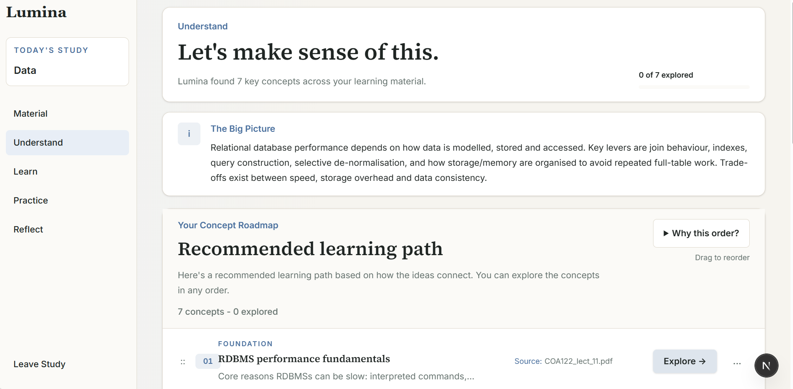

FEATURED · ONGOING PERSONAL PROJECT
Lumina
A calmer way to work through learning material.
Lumina brings academic and faith-based study into separate environments. Its developing study workflow connects uploaded material with a concept overview, a learning roadmap and individual explanations.
My contribution
I designed the core interface, navigation and study journey, using AI coding tools to support implementation and iteration.
Design decision
Separate material management from concept exploration, with persistent navigation so learners can see where they are in the journey.
Local prototype · Repository currently private. Learn, Practice and Reflect remain areas for continued development.


From source material to a structured overview. Select an image to enlarge it.